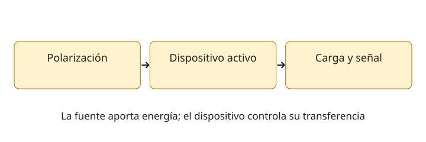

Lección 5 de 16
Diodos, transistores y válvulas
Reconoce los dispositivos activos y entiende qué condición necesita cada uno para conducir, amplificar o controlar una señal.
Uniones y polarización de diodos
El dopado crea materiales tipo N y P; una unión PN tiene una región de agotamiento y una característica corriente–tensión no lineal. En directa conduce más al aumentar la tensión; en inversa deja una corriente pequeña hasta la ruptura. El valor de 0,7 V es una aproximación útil para ciertos diodos de silicio y corrientes, no una constante universal. La temperatura, material y corriente importan. Distingue ánodo, cátodo y sentido de corriente convencional.
Dispositivos para tareas distintas
Un rectificador soporta corriente directa y tensión inversa. Un Zener se utiliza en ruptura inversa como referencia con limitación de corriente y potencia. Un varactor cambia su capacidad con la polarización inversa y sirve para sintonizar. El diodo túnel presenta una región de resistencia diferencial negativa. Un PIN puede emplearse en conmutación y atenuación de RF. Un LED emite luz y requiere limitar corriente. El símbolo y la función ayudan más que memorizar el aspecto de una cápsula.

El transistor bipolar
Tiene emisor, base y colector. En región activa, pequeñas variaciones de base controlan la corriente de colector: β = IC/IB en un punto de trabajo. IE = IC + IB. NPN y PNP requieren polaridades diferentes. En corte conduce muy poco; en saturación deja de comportarse como un amplificador lineal. La polarización fija un punto Q que permita variar la señal sin recortar. Las curvas relacionan corriente, tensión y excitación; no se interpreta β como un valor fijo para cualquier corriente y temperatura.
Emisor, base y colector común
En emisor común suele haber ganancia de tensión con inversión de fase; en colector común o seguidor, la ganancia de tensión es cercana a uno y ayuda a adaptar impedancias; en base común, la ganancia de corriente es próxima a uno y puede ser útil en RF. “Común” indica qué terminal comparten las referencias de entrada y salida para la señal. Distingue ganancia de corriente, tensión y potencia: una etapa puede no amplificar tensión y aun así entregar más corriente a una carga.
Transistores de efecto de campo
Un FET tiene puerta, drenador y fuente; el campo de la puerta controla la conducción del canal. La alta impedancia de entrada es útil, pero no significa que la puerta tolere cualquier tensión. JFET y MOSFET no se polarizan de forma idéntica; hay canales N/P y dispositivos de enriquecimiento/agotamiento. Consulta VGS, corriente, disipación y área segura de operación. La capacitancia de entrada, la frecuencia y el montaje afectan su funcionamiento en radio.
Emisión termoiónica y válvulas
Al calentar un cátodo pueden emitirse electrones; el ánodo positivo los atrae. El diodo de vacío tiene dos electrodos funcionales; el tríodo añade una rejilla de control; el tetrodo añade pantalla y el pentodo, una rejilla supresora. Las rejillas permiten controlar corriente y reducir efectos no deseados; no crean energía. Los circuitos de válvulas usan polarización, cargas y acoplamientos, y pueden mantener tensiones peligrosas almacenadas aun apagados. Estudiar el esquema no exige construir una etapa de alta tensión.
Resuelve paso a paso
Ganancia de corriente
Si IC = 20 mA e IB = 0,2 mA, β = 100 e IE = 20,2 mA. No uses esa β fuera del punto de trabajo sin comprobar las curvas.
Resistencia para un Zener
Ejemplo ideal: fuente de 12 V, referencia de 5,1 V, carga de 10 mA y Zener de 5 mA. R = (12−5,1)/0,015 = 460 Ω. Después verifica tolerancias, corriente máxima y disipaciones con y sin carga.
Comprueba lo aprendido: ¿Un seguidor de emisor que casi no aumenta tensión puede ser útil?
Sí. Puede ofrecer ganancia de corriente y adaptar una fuente de alta impedancia a una carga más baja.
Preguntas oficiales de este tema
Selecciona una alternativa y pulsa «Comprobar respuesta». Si fallas, podrás ver la respuesta correcta para seguir aprendiendo. Las preguntas con incidencias documentales se muestran solo para consulta y no se califican.
Continúa tu recorrido
Fuentes de estudio: programas técnicos y banco SUBTEL, apéndices A–E, versión 06/12/2020, y sus solucionarios oficiales. Reglamentación: Decreto 523, versión 21/06/2013; evaluación: Resolución Exenta 2620/2023. Revisión documental: 11/11/2026. Explicaciones, cálculos y esquemas didácticos de RUFCOM. Consultar documentos oficiales.